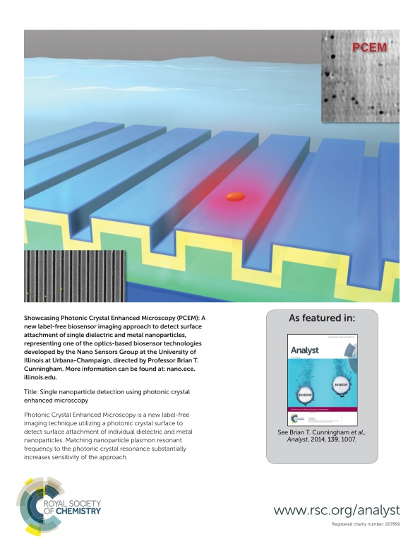
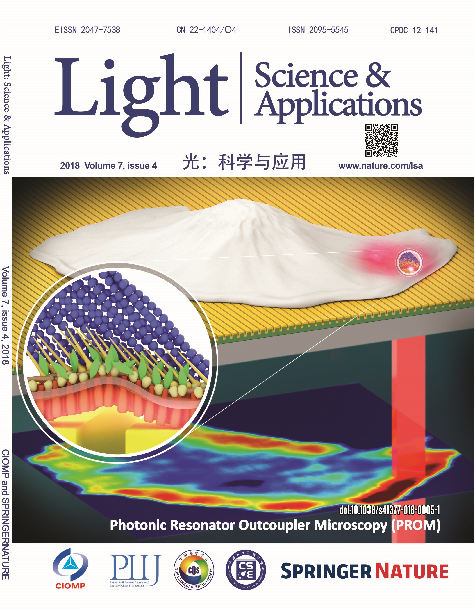
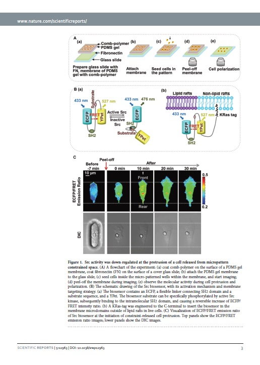

Research
Nano and Quantum Photonic Materials and Structures
 Light-matter interaction through nanophotonics materials or structures demonstrates exceptional optical properties, such as photonic bandgap, negative refraction, and diffraction-less light propagation. These unique optical properties enable a variety of applications including healthcare, life sciences, energy and environmental monitoring. My interest focuses on the design and development of nano and quantum optical materials and structures, including nanoparticles, photonic crystals, plasmonic, metamaterials, 2D materials and cell lasers.
Label-free Photonics Sensing and Imaging
 In electromagnetics, an evanescent field wave can enable near-field imaging with super-resolution beyond the diffraction limit. My research on label-free imaging focuses on how to better integrate nanophotonics into advanced near-field optical microscopy, improve system sensitivity and resolution, and develop complex lab-on-a-chip systems or wearable sensing and imaging devices. I am also interested in developing advanced imaging software to acquire and analyze spectra data from multi-modality label-free imaging system. The goal is to combine the nano-sensing techniques with artificial intelligence (AI) to quantify and interpret the cell attachment footprints of individual live cells, which can be utilized for wearable sensing, remote diagnosis and telemedicine.
Biosensing for Cellular and Molecular Adhesion Biophysics
 Part of my research focuses on integrating advanced micro and nano technologies to uncover fundamental biophysics mechanisms. Such technologies include micro and nano fabrication, labeled (e.g. fluorescence resonance energy transfer (FRET)) and label-free nano sensing/imaging modalities, and automated computational image analysis. Changes in cellular parameters associated with focal adhesion (such as cluster sizes and traction forces), have been linked to critical cellular processes, including metastasis, apoptosis, chemotaxis and pathologies of cancers. The development of physiological adhesion models may enable interpretation of the adhesion information to identify the differentiation stages of stem cells, model cancer cell invasion with the adhesion profile, and build footprint library as a platform for the study of malignant phenotypes.